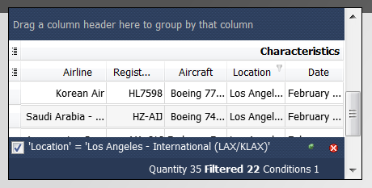
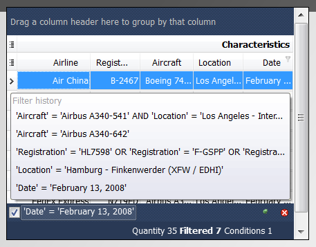
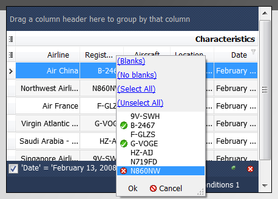
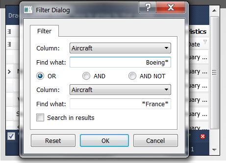

QtitanDataGrid Filters
In the QtitanDataGrid implemented a convenient mechanism for filtering the rows by the specified values. The mechanism is built into the grid view and requires no additional manipulations with the model data source. The filter can be configured directly through a set of dialogs and windows or hand-coding through the filter object API, which is available from the grid view. Manual coding is used if necessary to quickly provide to the end-user universal or special filters, which requires in your application and which can not or can hardly be obtained using standard filter's tools. The filter object has a hierarchical structure that allows you to create nested conditions of any complexity. Filtering is performed for column values. Filter action is executed on the client side of the application. In addition to the conditions of "EQUAL TO", "NOT EQUAL", "GREATER THAN", "LESS THAN", "GREATER THAN AND EQUAL TO", "LESS AND EQUAL", for string fields can be specifying special condition "LIKE" (or "NOT LIKE") which is triggered when string is not fully consistents search value. To specify a string like this it is necessary to use the wildcard symbol.
Graphical part UI of grid row's filtering is designed to meet maximize usability for the end-user. It includes 4 main ui control.
- Panel in the footer of the grid view
- Filter's history pop-up window
- Quick value selection pop-up dialog
- Filter dialog for fine-tuning
Panel in the footer of the grid view

Becomes active when the filter is enabled. It displays information that helps to understand what criterias is used for implementation of filtering. The panel can be switched to a special auto hiding mode. For this purpose, in the right corner (before close button) of the panel is the "automatically hide/always visible" switch. In the "auto hide" mode, the panel will fold down smoothly, when the user leads away the mouse pointer from the panel. That the panel appeared again you need to move mouse pointer to the edge of the bottom of the grid. This mode was designed to allow users to maximize open overview to see the rows with data. By default the enabled mode is "always visible". Another important switch on the left in the corner of the filter panel. This switch is designed to temporarily disable the filter without removing the filter's conditions and not closing panel at all. This feature is useful when you have time to go back to watching the data fell under the filter conditions but the very condition of the filter should be retained. After selecting the new conditions the switch is always translated into enabled state. In the central part of the panel displays the text with information about the details of the used filter in human-readable form. If you leave mouse pointer on this text for more than 1 second when will display a hint with a full description of the filter (if the text does not fit on the screen). Text represents a button, clicking on which opens the history of the applied filters (see below). Right at the bottom pane shows the measured filter performance. Indicates the total number of rows in the grid, number of rows caught in the filter, the total number of conditions in the current filter. The button with a red cross at the right corner, serves to close the panel and remove all the filters applied to the grid.
Filter's history pop-up window

Pop-up window displays the history of applied filters in this session earlier. History window appears after clicking on the button with the text in the center of the filter panel. Record in history is added immediately after applying a filter condition. When you first start a window contains only one entry - current condition of the filter. History can store up to 5 conditions. To select the history item just click on the text describing the condition of the filter. As a result this condition from the history will be applied to the grid. Information on how was constructed the previous filter's condition will be lost.
Quick value selection pop-up dialog

Quick selection pop-up dialog appears when you click on quick selection button located on the column header. For clarity, the button has a funnel filter icon. Pop-up appears directly under the column's header and contains a list of all values which contains rows for the selected column. Values are not repeated. The end-user can select one or more values of base using check box opposite values. Quick selection of all the values by clicking on the link Select All at the top of the dialog. Undo all selection by clicking on the link Unselect All. After clicking Ok button, will be constructed a special filter's condition that meets selected criteria. As a result, for the end-users will be available all rows in the column that contains the selected values. Constructing condition for filter mappings after that action can be continued. To do this, select the quick selection drop down dialog for the next column and choose value/values for this column. After clicking Ok button, the filter will be constructed in which enter two columns. Conditions for two columns will be grouped together in logical AND. And so on, until the filter will not be canceled completely, will not be called a filter dialog (see below) or will not applied the filter from the pop-up history. In additional for comfortable in this dialog added two buttons - Blanks or Non Blanks. Buttons allow end-user to filter the rows by empty or blank value in the cell for the selected column.
Filter dialog for fine-tuning

Allows to specify a value for fine-tuning the filter. Dialogue is used, including, when you are not sure that the desired value is in one of the cells in the grid or you are trying to find a value that does not correspond exactly. Dialog appears on pressing Cntrl+F keys combination and contains a fields to edit the values for two columns. When you first start there is only one area is active. The second area becomes active after the end-user selects the condition "AND", "OR" or "NOT AND" on which the two parts will be grouped together into a single filter condition. Restore the original state it is possible by pressing the reset button on the bottom left. Column in which you want to make filtering, available in the drop-down list, opposite the tag - column. Field to enter a value available in front of tag - value. Field to enter values automatically adjusts to the editor which is used to edit the value in the grid cell. For example, if you use a standard Qt delegate to edit a value in the cell, it will also be used to edit the value in the filter dialog. Value for all column's types, except strings, compared to the "EQUAL" condition when the filter is applied. For strings used the "LIKE" condition which allows to find the row by non-full compliance. For it using wildcard characters. Clicking on the Ok button at the bottom will activate the filter with the entered values. Dialog allows you to impose filter on the grid with an already active filter. To do this, you must enable the check box "Search in results" located directly on the dialogue. When this check box is checked the comdition, resulting from this dialogue, will be added to the filter's condition that is applied to the grid at the moment. Condition is added by the logical "AND". Cancel button is used to close the dialog. In this case, the removal of existing conditions or other manipulation with filter are not produced.